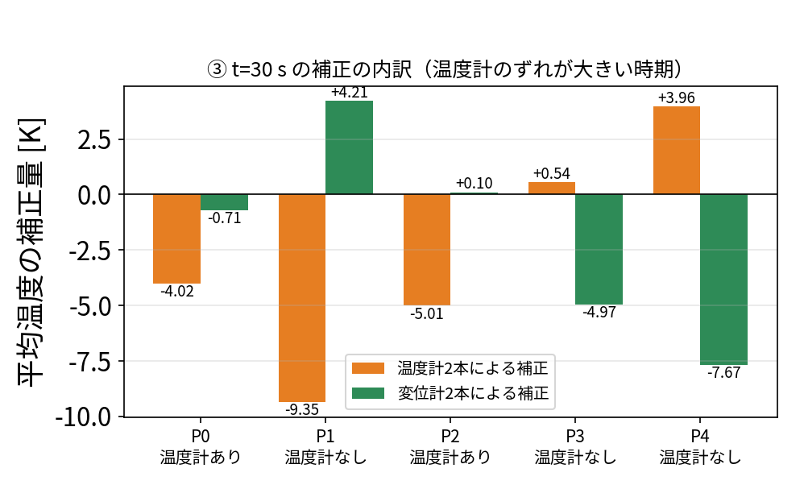
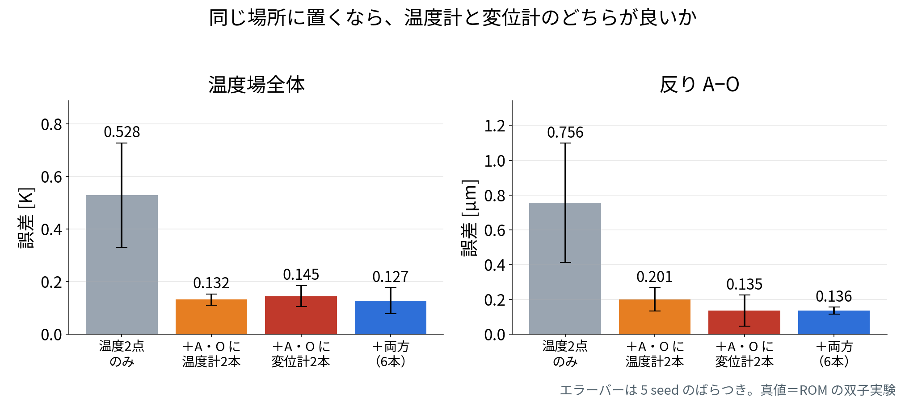
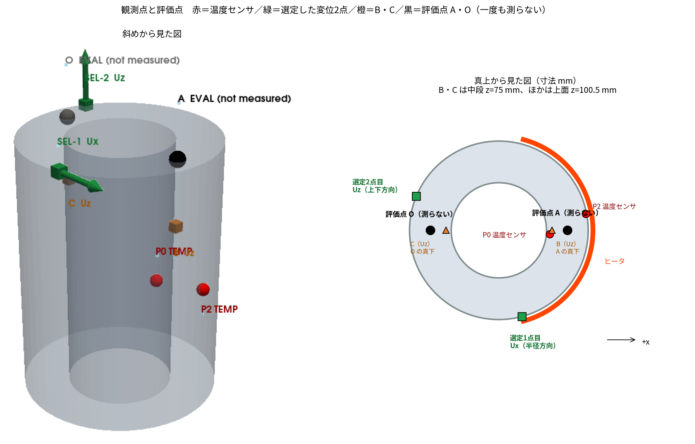
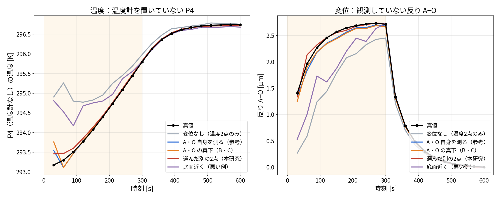
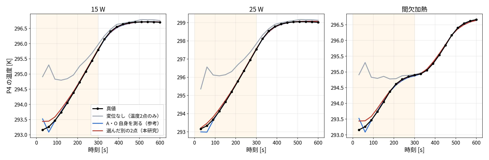
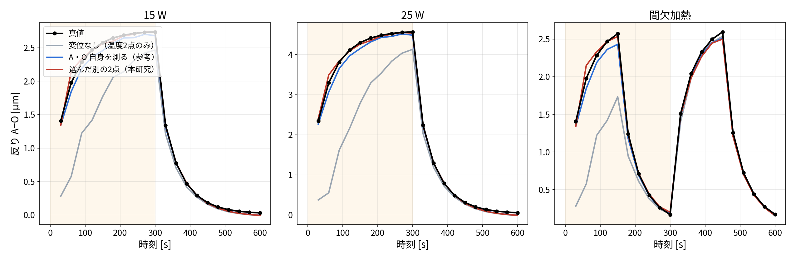
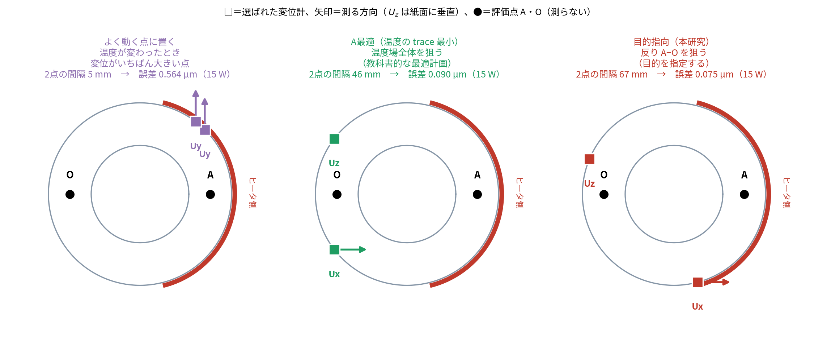
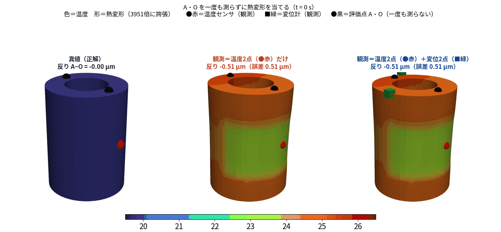

測れない場所の熱変形を、
測れる場所から当てる
― 温度だけでなく変位もデータ同化の「観測」に使う ―
OpenFOAM ＋ FrontISTR ＋ POD/Q-DEIM ROM ＋ EnKF（すべてオープンソース）
結論 ― 本日いちばん伝えたい3つの数字
知りたい場所 A・O を
一度も測らずに
当てた反りの誤差
0.075
µm （振幅の 2.7 %）
同じ A・O を
直接測ったときの
反りの誤差
0.137
µm （選んで測るほうが良い）
学習していない条件で
従来の回帰補正と
比べた誤差
1/3
回帰 0.29 → 同化 0.10 µm
真値は OpenFOAM＋FrontISTR の計算結果。実機での検証は未実施です。
本日の流れ ― 5つの問いに答えます
| 問い | 答え |
|---|
| 熱変形を知るのに、何を測ればよいか | 温度だけでなく変位も観測に入れる（切り口A） |
| 知りたい場所が測れないときは | 測れる場所を選んで測れば当たる（切り口B・目玉） |
| その置き場所はどう決めるか | 測る前に机上の計算だけで決まる。既存の配置法より良い |
| 運転条件が変わったらどうか | 従来の回帰補正の約 1/3 の誤差（切り口C） |
| 何が言えないか | 実機は未検証。文献調査も網羅的ではない |
道具は2つだけです ―
軽いモデル（POD/Q-DEIM の ROM）と、熱感度 \(W\)（FrontISTR）。どちらもオープンソースで作れます。
前半（4〜9枚目）背景と道具。なぜ測れないのかと、使う2つの道具
後半（10〜21枚目）切り口A・B・C。本日の中身はここ
最後（22〜23枚目）まとめと正直な限界
背景 ― 温まると工具先端が µm 単位でずれる背景

ヒータ 15 W を 300 秒入れたときの温度上昇（OpenFOAM CHT）
- 主軸・送り系・切削熱で機械が温まる
- 温まった部分が伸びて工具先端がずれる
- 加工誤差の大きな割合が熱起因
解析だけでは合わない。
熱伝達率も発熱量も分からないから。
→ 測定値で計算をその場で直す（データ同化）
本当の問題 ― 知りたい場所には、センサを置けない背景
知りたい場所工具先端（TCP）の変位。
これが加工精度そのもの
置けない理由加工中は切粉・クーラント・工具交換。
内部に熱電対は通せない
置ける場所機械の外側、コラム側面、
加工点から離れた構造部
だから問いはこうなります ―
「置ける場所でどう測れば、置けない場所の変形が当たるのか」
そして、その置き場所は設計できるのか。
既存研究の4つの流派と、空いている場所背景
①
回帰・機械学習
温度多点 → 変位を予測。学習した運転条件の外で外れる
②
詳細 FEM による補償
温度から変位を計算。境界条件が合わないと外れる
③
低次元化＋状態推定
ROM＋カルマンフィルタ（ETH Zurich 2024 ほか）。観測は温度のみ・変位は出力
④
直接測定による補償
変位計で測って直接補正。加工中は測れない・状態推定に戻さない
？
変位を「観測」として
状態推定に戻す
③と④の間が空いている。ここが本研究
文献調査は英語5回・日本語1回の検索。網羅的な調査ではありません。
題材 ― 中空円筒の片側をヒータで温める題材

OpenFOAM の温度場（左）を節点に補間し、FrontISTR で熱変形を計算（右、誇張表示）
- 外周の片側にヒータ 15 W、0〜300 秒
- 固体 20,696 セル／5,040 節点
- 評価する量＝上面 A・O の反り
（高さの差 \(U_z(A)-U_z(O)\) 、最大 2.74 µm）
真値はすべて計算で作りました。
①ROM の双子実験 ②OpenFOAM＋FrontISTR
実機は未実施です。
道具① 軽いモデル ― 代表5点で 600 秒を 31 ms に道具

POD＋Q-DEIM が自動で選んだ代表5点 P0〜P4
- なぜ要るか：EnKF は 60 メンバー回す。
実ソルバのままでは重くて使えない
- 温度場は 2つの型で 99.9 % 説明できる
（POD＝特異値分解）
- その係数を決める代表5点を QR 分解が選ぶ
- 5点の集中熱容量モデルに落とす
（校正残差 0.014 K）
600 秒の計算が 31 ms。
発熱量・加熱のしかたが変わっても使える（誤差 0.038 K）。
熱源の位置が変わると作り直し。
道具② 熱感度 \(W\) ― 変位計1本が、5点すべての温度に触れる道具

FrontISTR で計算した熱感度の分布。底面固定なので上面ほど大きく動く
\( K_s u = H_T T \;\Longrightarrow\; u = \underbrace{K_s^{-1}H_T}_{\textstyle W}\, T \)
「温度が 1 K 上がると、どこが 何 µm 動くか」の表。
反り A−O に対する5点温度の感度は
\( w = (0.47,\, -0.65,\, 0.60,\, 0.04,\, -0.46) \) µm/K
5点すべてに非ゼロ。符号が ＋と− に分かれている
- 温度計：1本で1点しか見ない
- 変位計：1本で5点すべてに触れる
A
切り口 A
変位は「結果」ではなく
「情報源」である
熱変形は、補正すべき誤差であると同時に
温度場を知るための情報でもある
温度計のない点の温度を、変位計だけが直している切り口A

EnKF 1 サイクルの補正量を「温度計の寄与」と「変位計の寄与」に分けたもの。温度計は P2・P0 の2本だけ
温度計のない P3・P4 が、変位計の情報だけで −4.97 K・−7.67 K 直っています。
結果、温度場 0.503 → 0.160 K、発熱量 14.05 → 14.89 W（真値 15 W）。
では変位計のほうが「情報量が多い」のか ― 正直に比べる切り口A

センサの本数（4本）と場所をそろえ、そこで何を測るかだけを変えた
温度場ならほぼ互角（0.132 対 0.145 K、差はばらつきに埋もれる）。反りなら変位計が良い。
変位計の価値は「情報量」ではなく、温度計を置けない場所に置けることです。
B
切り口 B ― 本日の目玉
測れない場所を、
測れる場所から当てる
評価点 A・O を一度も観測せずに、
別の場所の変位2点だけで A・O の反りを当てる
問題設定 ― A・O は一度も測らない切り口B

赤＝温度センサ（P2・P0）／緑＝選んだ変位2点（矢印＝測る方向）／橙＝比較用 B・C／黒＝評価点 A・O
以前の結果は、評価している A・O をそのまま観測に使っていました（循環）。
ここでは A・O から 12 mm 以内を候補から外し、循環を断っています。
どこを測るか ― 測る前に、机上の計算だけで決める切り口B
\( \sigma_S^2 = w^{\mathsf T}\big(B - BH_S^{\mathsf T}(H_SBH_S^{\mathsf T}+R)^{-1}H_SB\big)w \) ← 測った後に残る「反りのあいまいさ」［µm、小さいほど良い］

左＝1点目の採点（色が薄いほど良い）／中＝1点目を測った前提で採点し直したとき／右＝ \(\sigma\) が下がる様子
全 14,754 通りを採点して1位を採り（1.186 → 0.347 µm）、採点をやり直して2点目を採る（→ 0.256 µm）。
2位は1位とほぼ同じ場所なので、そのまま選んではいけない。使うのは \(W\) と ROM だけで、測定値は一切使いません。
結果①-1 温度も変位も、真値に重なる切り口B

左＝温度（温度計を置いていない P4）／右＝変位（一度も観測していない反り A−O）。黒＝真値、帯＝加熱中（0〜300 秒）
変位なし（灰）は加熱中ずっと外れたまま。変位2点を足すと、温度も反りも真値に重なります。
底面近く（紫）だけは外れたまま ― 置き場所で決まります。
結果①-2 置き場所で 7 倍変わる切り口B
A・O を一度も測らずに 0.076 µm（振幅 2.74 µm の 2.8 %）。
A・O を直接測った場合（0.135 µm）より正確。置き場所で 7倍変わる。
結果②-1 真値を OpenFOAM＋FrontISTR にしても、温度は合う切り口B

温度：温度計を置いていない P4 の時刻歴。黒＝真値（OpenFOAM）、帯＝加熱中。左から 15 W・25 W・間欠加熱
同化モデルは ROM のまま、真値だけを実ソルバに差し替えています。
変位なし（灰）は加熱中ずっと高めに外れますが、変位2点を足すと3条件とも真値に重なります。
結果②-2 観測していない反りも、3条件とも合う切り口B

変位：一度も観測していない反り A−O の時刻歴。黒＝真値（OpenFOAM＋FrontISTR）
3条件すべてで 0.07〜0.08 µm（25 W では変位なしの 1.408 µm から 17 倍改善）。
間欠加熱（右）では、150 秒で落ちて 300 秒で戻る2回目の山まで追えています。
その決め方は、既存の配置法より良いのか切り口B

同じ候補 14,754 通りに決め方を変えて適用。上面を真上から見た図（□＝変位計、●＝測らない A・O）
A最適は「温度場全体」を、本研究は「反り」を狙う。
「よく動く点に置く」は2点が 5 mm しか離れず、同じことを2回測ってしまう（他は 46〜67 mm）。
結果③ ― 目的を指定した決め方が、3条件とも最小切り口B
「何を最小化するか」が結果を決めます。
D最適は自分の指標では6つの中で最良なのに、反りの誤差では負ける。
温度場全体を良く知ることと、反りを良く知ることは別です。
目で見る ― 色＝温度、形＝熱変形（約 4,000 倍に誇張）切り口B

左＝真値／中＝温度2点だけ／右＝温度2点＋別の場所の変位2点。
●赤＝温度センサ／■緑＝変位計（右のみ）／●黒＝評価点 A・O（一度も測らない）
\(t=150\) 秒の反り：真値 2.57 µm ／ 温度2点のみ 1.38 µm ／ ＋変位2点 2.56 µm（誤差 0.01 µm）
切り口C ― 学習していない運転条件でも、回帰補正の約 1/3切り口C
そして同化は発熱量そのものを 24.9〜25.1 W と推定（真値 25 W）。これは回帰式には原理的にできません。
ただし ON/OFF をモデルに与えないと、間欠加熱では回帰式に約3倍で負けます。
まとめまとめ
A 変位は「情報源」変位計1本が熱感度 \(W\) を通じて5点すべての温度に触れる。
温度計のない点の温度まで直る（0.503 → 0.160 K、発熱量 14.89 W）。
ただし同じ場所なら温度計と互角。価値は「置けること」
B 測れない場所を当てる（目玉）A・O を一度も測らず、別の2点で 0.075 µm（振幅の 2.7 %）。
直接測る（0.137 µm）より正確。
置き場所は測定前に机上計算で設計でき、既存の配置法より良い（A最適 0.090・D最適 0.108）
C 条件が変わっても使える係数を決めていない 25 W で、回帰補正の約 1/3（0.10 対 0.29 µm）。
発熱量そのものも 25.1 W と同定。
実装は OpenFOAM＋FrontISTR＋Python、すべてオープンソースで公開
正直な限界と、公開情報まとめ
言えないこと
- 実機で有効とは言えない（真値はすべて計算）
- 「初めて提案した」とは言わない（文献調査は英語5回・日本語1回）
- EnKF・POD・変位の同化そのものは既知。新しいのは組み合わせと設計論
- 変位計が温度計より情報量が多いとは言えない
- 熱源の位置が変わると配置も変わる
公開しています
| リポジトリ | github.com/kamakiri1225/
thermal-da-demo |
| 解説記事（全8回） | kamakiri1225.github.io/
thermal-da-demo/ |
OpenFOAM ケース・FrontISTR 入力・Python（ROM／EnKF／配置選定）一式。
本日の数値はすべて、計算条件とコードつきで記事に載せています。
次にやること ―
実機実験、センサ数をそろえた比較、3点以上・別の目的量での配置比較
ご清聴ありがとうございました